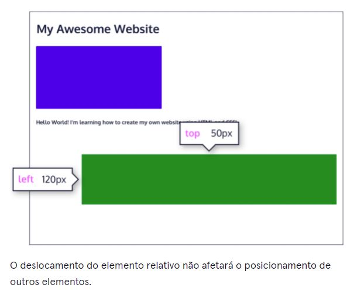
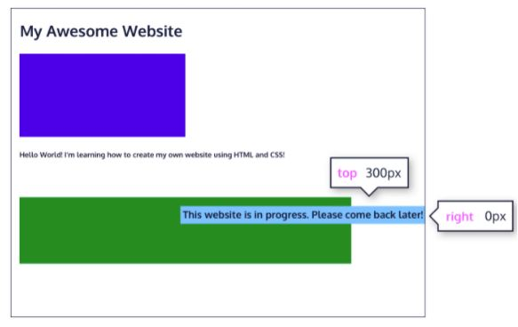
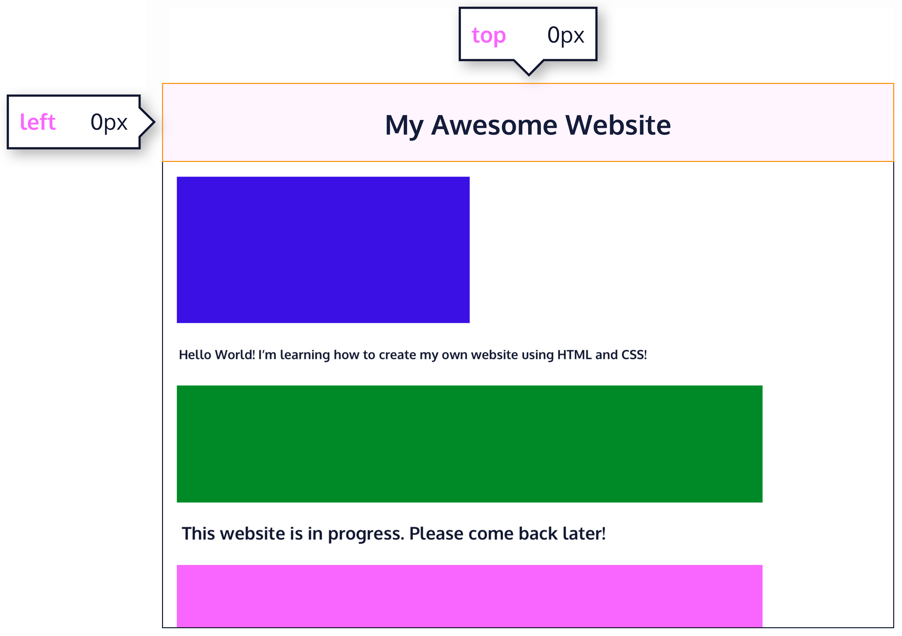
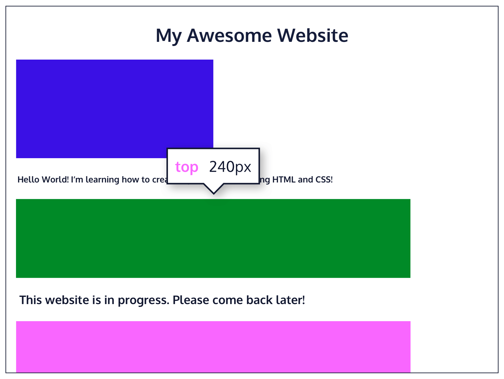
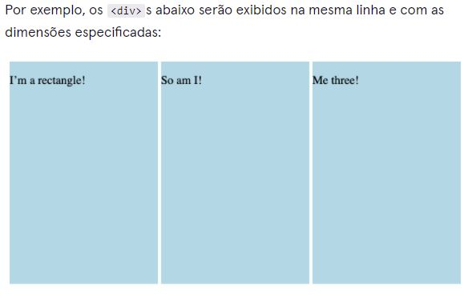

Uma maneira de modificar a posição padrão de um elemento é definindo sua position propriedade como relative. Esse valor permite posicionar um elemento em relação à sua posição estática padrão na página da web.
- top- move o elemento para baixo a partir do topo.
- bottom- move o elemento de baixo para cima.
- left- afasta o elemento do lado esquerdo (para a direita).
- right- afasta o elemento do lado direito (para a esquerda).
Exemplo de Sticky que vai te incomodar
Outra maneira de modificar a posição de um elemento é definindo sua posição como absolute. Quando a posição de um elemento é definida como absolute, todos os outros elementos na página ignorarão o elemento e agirão como se ele não estivesse presente na página. O elemento será posicionado em relação ao elemento pai posicionado mais próximo, enquanto as propriedades de deslocamento podem ser usadas para determinar a posição final a partir daí. Dê uma olhada na imagem abaixo:
Podemos fixar um elemento em uma posição específica na página (independentemente da rolagem do usuário) definindo sua posição como fixed, e acompanhando-o com as propriedades top de deslocamento familiares , bottom, left e right.
O sticky valor é outro valor de posição que mantém um elemento no fluxo do documento à medida que o usuário rola, mas permanece em uma posição especificada à medida que a página é rolada ainda mais. Isso é feito usando o sticky valor junto com as propriedades de deslocamento familiares, bem como uma nova.
A z-index propriedade controla o quanto um elemento deve aparecer para trás ou para frente na página da Web quando os elementos se sobrepõem. Isso pode ser pensado como a profundidade dos elementos, com elementos mais profundos aparecendo atrás de elementos mais rasos.
A z-index propriedade aceita valores inteiros. Dependendo de seus valores, os inteiros instruem o navegador sobre a ordem em que os elementos devem ser colocados em camadas na página da web.
a z-index propriedade não funciona em elementos estáticos.
Cada elemento HTML tem um display valor padrão que determina se ele pode compartilhar espaço horizontal com outros elementos. Alguns elementos preenchem todo o navegador da esquerda para a direita, independentemente do tamanho de seu conteúdo. Outros elementos ocupam apenas o espaço horizontal que seu conteúdo exige e podem estar diretamente ao lado de outros elementos.
O padrão display para alguns elementos, como <em>, <strong>, e <a>, é chamado inline. Os elementos inline têm uma caixa que envolve seu conteúdo firmemente, ocupando apenas a quantidade de espaço necessária para exibir seu conteúdo e não exigindo uma nova linha após cada elemento. A altura e a largura desses elementos não podem ser especificadas no documento CSS. Por exemplo, o texto de uma marca âncora ( <a>) será, por padrão, exibido na mesma linha que o texto ao redor e terá a largura necessária para conter seu conteúdo. inline os elementos não podem ser alterados em tamanho com as propriedades height ou width CSS.
Alguns elementos não são exibidos na mesma linha que o conteúdo ao seu redor. Estes são chamados de elementos de nível de bloco . Esses elementos preenchem toda a largura da página por padrão, mas sua width propriedade também pode ser definida. A menos que especificado de outra forma, eles têm a altura necessária para acomodar seu conteúdo. Os elementos que são de nível de bloco por padrão incluem todos os níveis de elementos de título ( <h1>através <h6>de ) <p>, <div>e <footer>. Para obter uma lista completa de elementos de nível de bloco, visite documentação do MDN
O terceiro valor para a display propriedade é inline-block. A exibição de bloco em linha combina recursos de elementos de bloco e em linha. Elementos de bloco embutido podem aparecer um ao lado do outro e podemos especificar suas dimensões usando as propriedades width e height. As imagens são o melhor exemplo de elementos de bloco inline padrão.
A float propriedade é comumente usada para envolver o texto em torno de uma imagem. Observe, no entanto, que mover elementos para a esquerda ou para a direita para fins de layout é mais adequado para ferramentas como grade CSS e flexbox, sobre as quais você aprenderá mais tarde.
A floatpropriedade geralmente é definida usando um dos valores abaixo:
- left- move, ou flutua, elementos o mais à esquerda possível.
- right- move os elementos o mais para a direita possível.
A float propriedade também pode ser usada para flutuar vários elementos de uma só vez. No entanto, quando vários elementos flutuantes têm alturas diferentes, isso pode afetar seu layout na página. Especificamente, os elementos podem “bater” uns nos outros e não permitir que outros elementos se movam adequadamente para a esquerda ou para a direita.
A clear propriedade especifica como os elementos devem se comportar quando se chocam na página. Pode assumir um dos seguintes valores:
- left—o lado esquerdo do elemento não tocará em nenhum outro elemento dentro do mesmo elemento que o contém.
- right—o lado direito do elemento não tocará em nenhum outro elemento dentro do mesmo elemento que o contém.
- both— nenhum dos lados do elemento tocará em qualquer outro elemento dentro do mesmo elemento que o contém.
- none— o elemento pode tocar qualquer um dos lados.
- A position propriedade permite especificar a posição de um elemento.
- Quando definido como relative, a posição de um elemento é relativa à sua posição padrão na página.
- Quando definido como absolute, a posição de um elemento é relativa ao elemento pai posicionado mais próximo. Ele pode ser fixado em qualquer parte da página da Web, mas o elemento ainda se moverá com o restante do documento quando a página for rolada.
- Quando definido como fixed, a posição de um elemento pode ser fixada em qualquer parte da página da web. O elemento permanecerá à vista, não importa o quê.
- Quando definido como sticky, um elemento pode ficar em uma posição de deslocamento definida quando o usuário rola seu contêiner pai.
- O z-indexde um elemento especifica o quão para trás ou para frente um elemento aparece na página quando ele se sobrepõe a outros elementos.
- A display propriedade permite controlar como um elemento flui verticalmente e horizontalmente em um documento.
- inline elementos ocupam o menor espaço possível e não podem ser ajustados manualmente width ou height.
- block elementos ocupam a largura de seu contêiner e podem ter heights ajustados manualmente.
- inline-blockos elementos podem ter set widthe height, mas também podem aparecer um ao lado do outro e não ocupar toda a largura do contêiner.
- A float propriedade pode mover elementos o mais para a esquerda ou para a direita possível em uma página da web.
- Você pode limpar o lado esquerdo ou direito de um elemento (ou ambos) usando a clear propriedade.